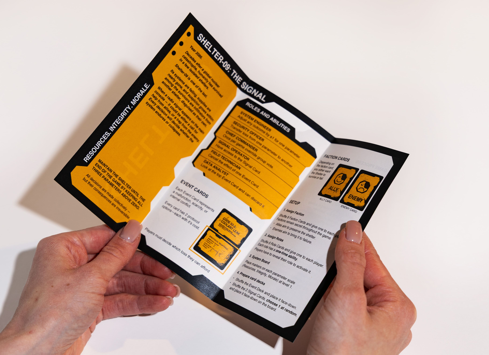
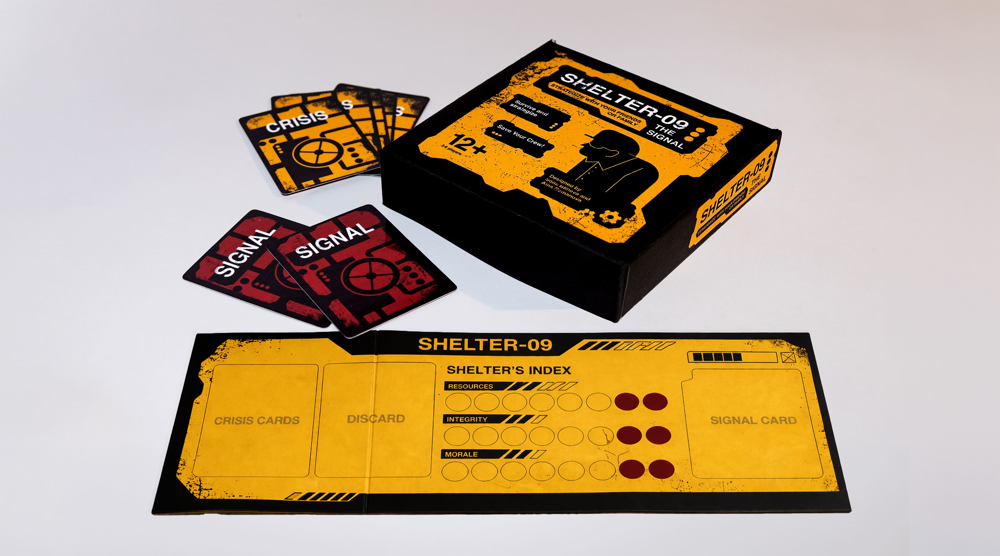
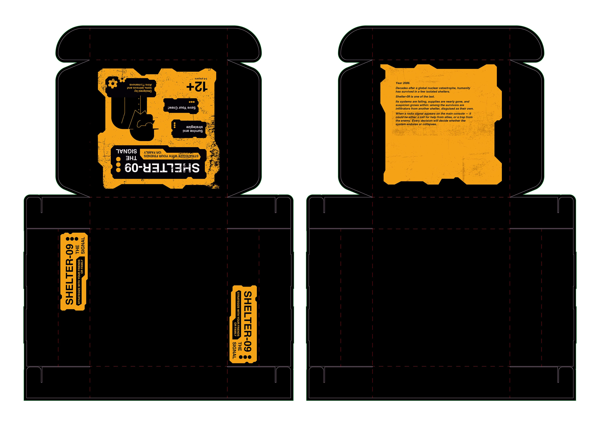

Shelter-09: The Signal is a strategy-based tabletop game set inside a failing underground shelter decades after a nuclear catastrophe. The project focuses on decision-making under pressure, where players must navigate uncertainty, limited resources, and hidden roles within the group.

The game combines event-driven mechanics, hidden faction roles, and a three-parameter system (Resources, Integrity, Morale) that must be maintained through collective decisions. Each round introduces a new crisis, while a hidden signal at the end can either support or destabilize the system, shifting the final outcome.
The game physical game system includes a crisis event deck, role and faction cards, signal cards, an acrylic game board with parameter tracks, tokens, packaging, and a printed instruction manual—translating the mechanics into a clear, structured visual interface.

